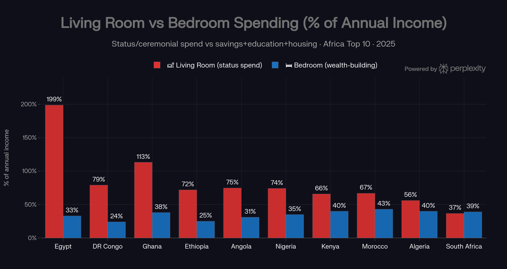
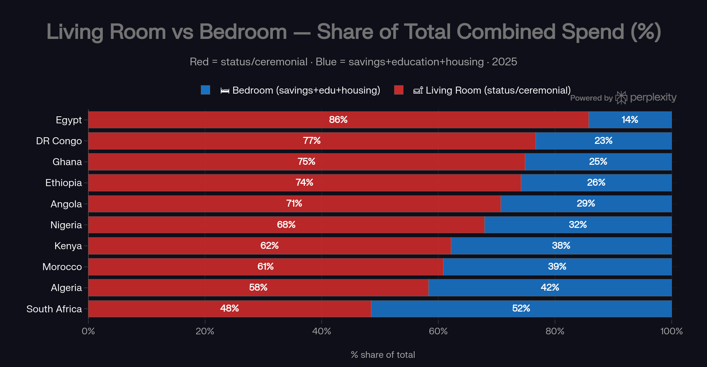
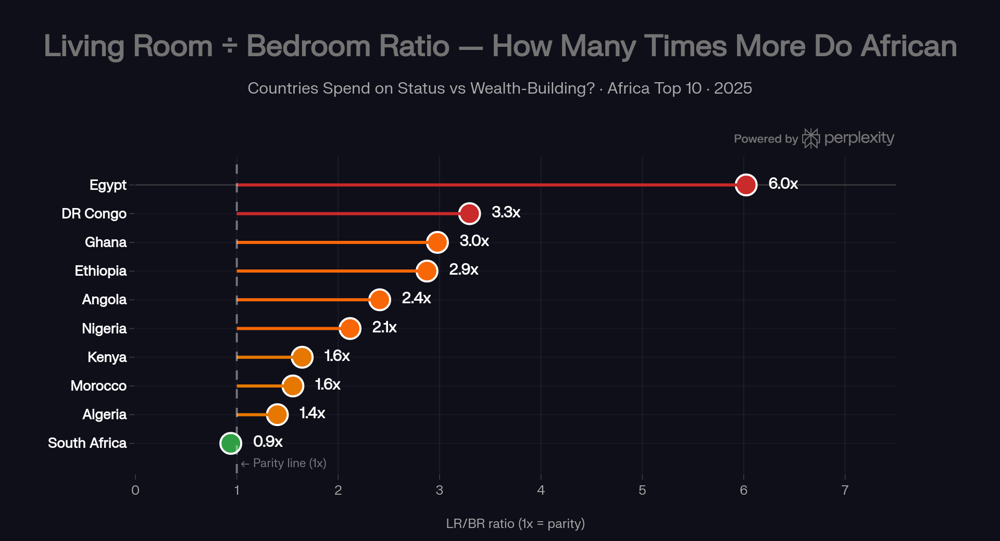
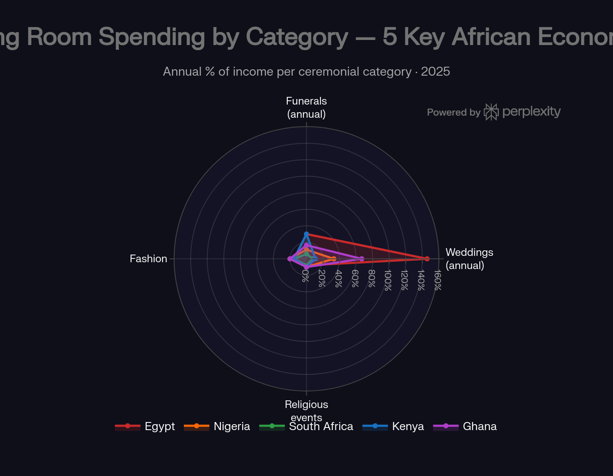

The living room vs the bedroom.
The Living Room is money spent on what others see — weddings, funerals, fashion, gifts. The Bedroom is money spent on what builds you — savings, education, housing. Across nine of Africa’s ten largest economies, the Living Room wins by 1.4–6×. Verified, corrected and extended by AGF.
Section 01The Two Rooms, Two Philosophies
This report uses a simple cultural-economic frame:
- The Living Room = money spent on what others see — weddings, funerals, fashion, religious ceremonies, gifts. Spending driven by social obligation, community reputation and collective identity. The status economy.
- The Bedroom = money spent on what builds you — savings, education, housing investment, pension contributions. Spending driven by family wealth accumulation. The self-actualisation economy.
The central question: in Africa’s biggest economies, how much of household income flows into each room? The answer explains much of the continent’s wealth-accumulation paradox — extraordinarily hardworking, community-rich societies producing limited intergenerational private wealth.
In nine of the ten largest African economies, households direct 1.4–6× more toward status visibility than toward wealth accumulation. The exception is South Africa — at near parity.
A note on method before the charts: the Living Room percentages are an annualised severity index — once-a-decade ceremony costs spread over ten years, plus annual funeral, fashion and religious-giving components — computed for urban middle-income households against average wages. Read them for ranking and proportion, not as literal household budget shares (see the fact-check in Section 09).
Section 02The Master Comparison


The pattern holds whichever way you cut it: in Egypt, 86 of every 100 combined “two-room” pounds go to status-visible spending; in Ghana 75 of 100 cedis; in Nigeria 68 of 100 naira. South Africa, at 48%, is the only economy where the Bedroom takes the larger share.
Section 03The Ratio, Country by Country


The category split matters for the fix: weddings are the single largest Living Room line everywhere, funerals second — both are plannable, insurable events, which is exactly why the pre-saving products discussed in Section 09 can work.
Section 04The Extremes: Egypt, Ghana, Nigeria
Egypt — the most extreme Living Room economy (6.0×)
The Egyptian shabka (gold jewellery for the bride) alone costs $5,000–$10,000; full middle-class wedding costs reach $35,000–$60,000 including the expected apartment contribution. As the pound lost over 70% of its value between 2021 and 2025, these dollar-priced obligations repriced upward while incomes stagnated. Against this, Egypt’s gross national savings rate — 9.3% of GDP — is the lowest in the top ten, and most families save through informal gam’iya clubs rather than financial products. The result is a structural deficit on wealth-building, and a documented marriage crisis: CAPMAS recorded 936,739 marriages in 2024 — roughly 8.7 per 1,000 people — falling 2.5% year-on-year while divorces rose 3.1%, as the cost of entry prices young men out. (Corrected figure — see Section 09.)
Ghana — a wedding industrial complex built on debt (3.0×)
Ghana’s GHS 200,000–300,000 weddings consume ~67% of annual income in a single event, and West African funeral culture — multi-day celebrations that project family honour — compounds the burden, with research finding households spending up to a year’s income on a single funeral. Meanwhile Numbeo-style property-price-to-income readings for Accra are among the highest anywhere (treat the exact decimal sceptically — the sample is thin), meaning home ownership is effectively out of reach without generational transfers or diaspora remittances. The same households financing 80 months of wedding could, theoretically, fund a mortgage deposit with that capital.
Nigeria — the owambe paradox (2.1×)
Nigeria’s ratio is not the continent’s most extreme, yet its home-ownership rate is in Africa’s lowest tier (reported at ~41% by one ranking; national urban data suggests nearer 25%) while property-to-income ratios of 21–28 make formal purchase nearly impossible without multi-decade savings. Against that, the average ₦13 million wedding (Cowrywise, 2025 — verified) equals 39 months of average income, and Lagos’s owambe culture keeps the floor rising. Every ₦13 million spent on a wedding is a Lagos property deposit that was never made.
Section 05The Bedroom Leaders: South Africa, Kenya, Algeria & Morocco
- South Africa (0.9× — near parity) is the only top-ten economy where wealth-building spending roughly matches status spending. The structural reasons: pension fund assets above 80% of GDP (no other African economy comes close), the continent’s lowest property-price-to-income ratio (~3.3), and a formal credit layer — including funeral insurance and burial societies — that converts ceremonial obligations from debt events into pre-funded ones.
- Kenya (1.6×) is the mobile-money proof case: 90% of adults hold an account (Findex 2025 — verified, the highest in Sub-Saharan Africa), and the M-Shwari/Sacco ecosystem makes formal saving genuinely accessible. Wedding costs of ~13 months of income are still heavy, but the Bedroom infrastructure exists.
- Algeria (1.4×) benefits from higher wages and a stronger state safety net that reduces the insurance function of ceremonies. Its famous 39% gross savings rate is government petrodollars, not household behaviour.
- Morocco (1.6×) combines higher incomes with moderate ceremony costs in absolute terms. One correction from our fact-check: financial inclusion is improving fast but is ~42–58% of adults (Findex 2025 / Bank Al-Maghrib 2024), not the 81% originally claimed.
Section 06Where Poverty Amplifies It: Ethiopia, Angola, DR Congo
The lowest-income members of the top ten face the harshest arithmetic: modest ceremonies in dollar terms are enormous in income terms. An Ethiopian household earning ~$51/month allocating 43 months of income to a wedding faces a Living Room tax that leaves almost nothing for Bedroom investment. Angola’s alambamento tradition adds a staged bride-price layer before reception costs. DR Congo — the weakest data in the set, flagged as a rough estimate — pairs ~$40/month formal wages with $2,500 weddings; the country holds a dominant share of the world’s cobalt and coltan, yet per-capita income under $600 means resource wealth is not translating into household wealth. Status obligations consume what little surplus exists.
Section 07Why the Living Room Wins: The Incentive Structure
- The social insurance function. Without state pensions or unemployment benefits, community networks are the safety net — and visible generosity at weddings and funerals is the premium payment into that community insurance system.
- Signalling in information-poor markets. Where credit scores and verifiable track records are weak, a lavish ceremony is marketing for your family’s social credit rating.
- The diaspora amplification effect. A share of the ~$95bn in annual remittances funds ceremonies diaspora members cannot attend but are expected to sponsor — converting diaspora Bedroom savings into home-country Living Room spending, and raising the local floor of acceptable ceremony scale.
- The absence of compounding education. When wedding debt visibly buys community esteem while a savings account loses to 20%+ inflation, the Living Room looks rational.
- Social media escalation. Instagram and TikTok ceremony videos from Lagos, Accra, Nairobi and Cairo set ever-higher benchmarks for what a “good” event looks like.
Section 08What the Bedroom Is Not Building
- Delayed home ownership: ceremony spending and extreme property-to-income ratios compound each other — the wedding is the deposit that was never made.
- Thin retirement capital: outside South Africa’s pension system, the continent is ageing without retirement infrastructure — today’s Living Room spending becomes tomorrow’s children’s burden, the social insurance function inverted.
- Education underspend: African households already carry ~40% of total education costs; measured Ugandan data (Section 09) shows wedding debt directly crowds out education and business investment.
- Remittance misdirection: the majority of the ~$95bn diaspora flow is consumed rather than invested; a structural shift toward Bedroom remittances — land, education funds, business equity — would transform the continent’s capital formation.
Section 09The Fact-Check: Verified, Corrected, Added
AGF independently reviewed this analysis against primary sources and our fact-checked research library before publishing. The full annex is in the PDF edition; the essentials:
Verified
- Kenya’s 90% account ownership (Findex 2025); Nigeria’s 20+ point inclusion jump; South Africa’s pension depth; the $95bn remittance flow; the wedding inputs match our Price of “I Do” fact-check.
- The funeral layer is real and measured: Case, Garrib, Menendez & Olgiati (“Paying the Piper”, NBER/EDCC) tracked 3,751 deaths in KwaZulu-Natal — an adult’s funeral costs roughly a year’s income, and ~25% of households borrowed to pay for it.
Corrected
- Morocco’s financial inclusion: ~42–58% of adults (Findex 2025 / Bank Al-Maghrib 2024), not 81% as originally stated.
- Egypt’s marriage rate: ~8.7 per 1,000 (CAPMAS 2024), not 6.1 — the decline itself (−2.5% y/y, divorces +3.1%) is confirmed.
- The headline percentages are an index, not literal budget shares — they annualise middle-class ceremony costs against average wages. The ranking is robust (it matches our independently compiled months-of-salary table); the absolute numbers should not be quoted as household budgets.
Added — the measured evidence
- Uganda measured the mechanism: an academic expenditure study (MIU, 2026) found weddings averaging 15.5 months of household income, 76% of couples in post-wedding debt (31.4 months to repay), 89% depleting savings — and social pressure, not income, as the strongest predictor of spending. That is the Living Room thesis in one regression.
- The Bedroom already wins somewhere: South Africa’s burial societies and funeral insurance prove ceremonial obligations can be pre-funded rather than debt-funded — the product gap is a ceremony sinking-fund on mobile-money rails, and Kenya’s 90% inclusion makes it the natural pilot market.
- The imbalance predates the currency crises: Egypt’s household surveys measured marriage costs at 4.5× GNP per capita in 1999 — the devaluation amplified an old structure, it didn’t create it.
- Africa is not alone, but the ratio is steeper: India runs a $130bn Living Room at ~5× GDP per capita per wedding (Jefferies 2024); the US spends ~5–6 months of median household income (The Knot). Africa runs Indian-intensity ceremonies on a fraction of the income, with thinner safety nets.
Section 10Conclusion: Two Rooms, One House
The Living Room is not irrational — it performs real insurance, signalling and belonging functions, and weddings and funerals are institutions, not extravagances. But the data, corrected and verified, still says: across nine of the ten biggest African economies, households spend roughly 1.4–6× more on status visibility than on wealth accumulation. The path forward is not dismantling the Living Room but scaling the Bedroom alongside it: pre-saving products for inevitable ceremonies, mobile-money rails that make Bedroom returns visible, and cultural shifts — already visible among younger urban Africans — that define status through ownership rather than ceremony scale.
The Living Room costs you months. The Bedroom builds you years. Both rooms belong in the house — the question is which one you furnish first.
Method & sources: original analysis compiled from World Bank Gross Savings and Global Findex data, Numbeo property indices, Cowrywise, CalcMoney, JanaTribe, GeoPoll, BMC/NBER funeral-cost research, UNESCO/UNICEF education financing data and national wage aggregators (full 39-source reference list in the PDF). Independently fact-checked by Africa Global Forum against primary sources, July 2026 — verification annex included in the PDF edition. Companion reports: The Price of “I Do” and Africa Is Under-Processed.
The diaspora helps the diaspora.
Africa Global Forum is a peer network for Africans abroad — help each other, sit together, and bounce ideas. The research above is part of an open library. The Forum itself is by application.